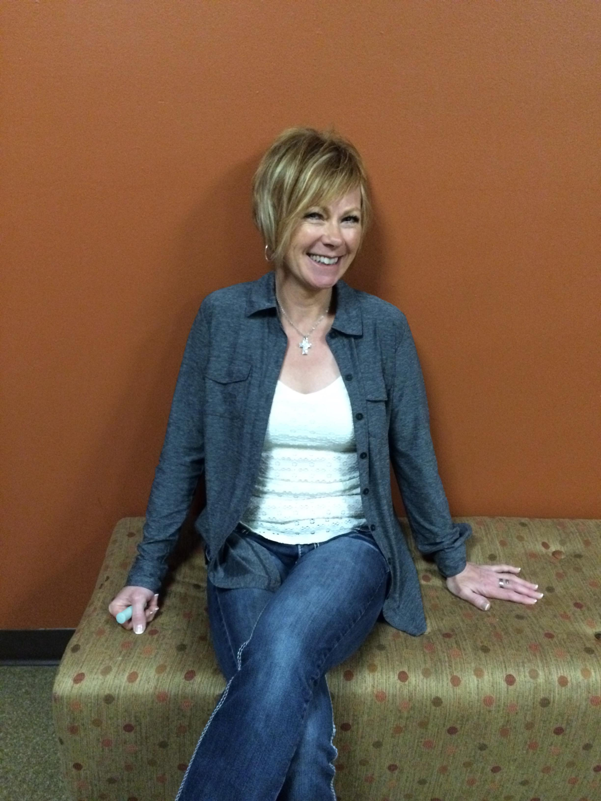

Rhonda Fischer
A bachelor’s prepared RN with a board certification in Emergency Nursing, brings her enthusiasm for people and joy-filled living in to her almost 25 year history as a nurse. She has worked both stateside and overseas in Emergency nursing and public health and was honored to receive the March of Dimes “Nurse of the Year” award for Oregon and SW Washington in the Emergency Nursing category for 2014. Rhonda is passionate about teaching others how to celebrate and support the unique contribution of each team member and the rewards of cultivating trust within the team. To that end, she has been a TeamSTEPPS Master Trainer since 2010, presenting at the local, state and national level. Her engaging and energetic speaking style inspires others to never lose sight of what fuels their passion, both personally and professionally.
Jan Brauer
BSN, MA believes that we are all unique and have something to contribute to a team. She is energized by working on highly effective teams and helping others tune their teams for greater success. With more than 30 years as a labor and delivery nurse and 5 years as a TeamSTEPPS Master Trainer in Oregon and nationally, Jan has become a leader in patient-centered teamwork to ensure that healthcare teams are working collaboratively to provide quality patient centered care. Audiences love Jan’s sense of humor and engaging, energetic approach to sharing the core elements of developing successful teams, the role of temperament in forming strong teams, and the practical tools necessary for building teams.
What We Offer
Here is a look at the workshops that we offer
TeamSTEPPS
sdfs
TeamSTEPPS is a teamwork system designed for health care professionals that is:
- A powerful solution to improving patient safety within your organization.
- An evidence-based teamwork system to improve communication and teamwork skills among health care professionals.
- A source for ready-to-use materials and a training curriculum to successfully integrate teamwork principles into all areas of your health care system.
- Scientifically rooted in more than 20 years of research and lessons from the application of teamwork principles.
- Developed by Department of Defense's Patient Safety Program in collaboration with the Agency for Healthcare Research and Quality.
Tuning Up Your Team: The Role of Temperament in Team Performance
Do you ever wonder why some teams seem more efficient and effective than others? High performing teams have discovered the role that temperament plays in team performance. They have learned to deploy in the areas of their strengths and accomadate for each other's weaknesses. How do they do that? They know their team and they value their differences. They're not surprised by the conflict their uniqueness generates but have learned to leverage it to build a stronger team. Utilizing the DISC temperament tool, Jan and Rhonda will help you discover your unique contribution to your team. They will also teach you how to change your leadership speak and conflict management style to most effectively relate to each team member's particular temperament.
Leadership that Goes the Distance: Cultivating a Leadership Culture
Without strong leadership, even the best teams will falter. Mastering the art of “self-leadership” is critical for both individual success and creating winning teams. However, most people find it easier to direct others rather than do the difficult work of self-reflection that will ultimately propel the whole team towards greatness.
The two speakers will guide you through a series of “self-leadership” questions that will help ensure you are giving the best possible gift you can give your team– a fully focused, deeply passionate and highly energized you. Those who commit to the rewarding work of self-leadership are then uniquely positioned to excel at one of the leader’s greatest responsibilities: replication. In this session you will learn how to identify and cultivate the leadership potential in others. You will also gain insight into how casting a compelling vision for a “leadership culture” will motivate, activate and ultimately transform your team.
The Answer is in the Room: Problem Solving that Will Reinvigorate Your Struggling Team
All teams go through seasons of stagnation and conflict; members of a team need to understand that this is normal in order for the team not to get derailed. Healthy teams proactively identify and address the barriers they face. "The Answer is in the Room" is an interactive workshop about empowering team members to find collective solutions, maximizing the strengths found within the team.
Session participants will discover how they can utilize a four-step process (the 4Ds) to address team-based problem solving. They will also discover how TeamSTEPPS tools and concepts are the keys to unlocking the team’s higher goal, propelling their team into a place of strength and effectiveness once again.